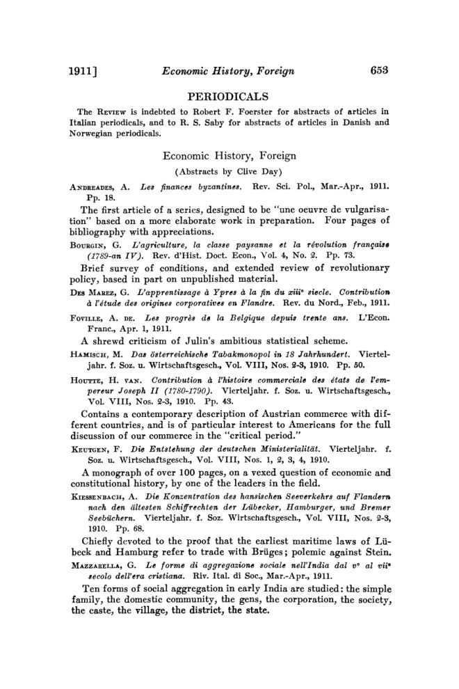

Setembro de 1911: sindicatos, tarifas de serviços públicos e impostos
Leitura: 5 min
Commons explica a hostilidade sindical à administração científica, J. M. Clark discute quem paga pela capacidade das usinas, e quatro artigos tratam de impostos na Inglaterra, Ohio, Illinois e cooperativas na Califórnia.


Como financiar a reforma social e, ao mesmo tempo, um seguro mais pesado para a segurança comercial e territorial? É o duplo problema com que J. Watson Grice, de Londres, abre seu balanço da tributação inglesa. O governo liberal fora eleito em 1906 prometendo conter o gasto, e se viu diante de necessidades públicas sempre maiores.
O número de setembro de 1911 é o terceiro da American Economic Review. Traz seis artigos, 43 resenhas organizadas por área, listas de livros novos, documentos oficiais, resumos de periódicos e as notas da redação.
O que trazem os dois primeiros artigos?
John R. Commons sustenta que a oposição sindical à administração científica é contra a barganha individual imposta pelo sistema de bônus, e não contra a eficiência. J. Maurice Clark defende cobrar de cada consumidor de gás, eletricidade ou telefone pela parte que lhe cabe na demanda de pico. Os dois têm páginas comentadas próprias.
Como tributavam a Inglaterra e os estados americanos?
Grice descreve as respostas inglesas: aumento do imposto sobre a renda das propriedades, um imposto adicional sobre rendas acima de £5.000, que o governo estimava atingir cerca de 10.000 contribuintes, e os impostos sobre o valor da terra, que deveriam dar receita crescente ao Estado e aliviar os tributos locais sobre imóveis ocupados.
Nos Estados Unidos, o problema era o imposto geral sobre a propriedade. Ernest L. Bogart conta como Ohio, cuja constituição de 1851 exigia tributar toda propriedade por uma regra uniforme, passou a separar impostos especiais sobre empresas e criou uma comissão tributária permanente. Na primeira avaliação da comissão, a base tributável das ferrovias aumentou cerca de US$ 20 milhões, perto de 100%.
John A. Fairlie mostra que Illinois, terceiro estado em população e em indústria, mantinha formas de tributação do tempo dos pioneiros. A lei previa abertamente a avaliação a uma fração do valor de mercado: desde 1909, um terço do valor pleno.
E a cooperação na Califórnia?
Ira B. Cross encontra o êxito cooperativo mais nítido do estado na comercialização de frutas cítricas. A California Fruit Growers' Exchange movimentava mais de US$ 20 milhões por ano em produtos de pomar para cerca de 6.000 produtores.
O que mais traz o número?
Na seção de moeda e bancos, David Kinley resenha The Purchasing Power of Money, de Irving Fisher, com reservas sobre a coerência do argumento, mas sem dúvida sobre seu peso. Edward L. Thorndike resenha o Motion Study de Frank B. Gilbreth, e dois volumes do Pittsburgh Survey tratam dos trabalhadores do aço e das famílias de Homestead.
Para Kinley, o livro de Fisher pode ser chamado “o mais importante livro americano do ano no campo da economia”. (“the most important American book of the year in the field of economics”)
As notas registram 167 novos sócios e assinantes desde o número anterior, com total de 2.160 sócios em 20 de julho de 1911. Lucile Eaves publica uma carta em que contesta a resenha de Ira B. Cross sobre seu livro de história da legislação trabalhista da Califórnia.
Na minha leitura
Na minha leitura, os artigos deste número discutem o mesmo problema em três terrenos: como repartir um custo comum. Clark reparte a capacidade de uma usina entre consumidores; Commons, os ganhos de eficiência entre empregadores e empregados; Bogart, Fairlie e Grice, o custo do Estado entre contribuintes. Nos três, a regra de repartição depende de uma medida confiável, a demanda de pico, a produção por trabalhador ou o valor dos bens, e a medida depende de quem a faz.
Por isso os artigos sobre os estados americanos insistem na administração, e não só na alíquota. Uma regra uniforme aplicada sobre avaliações a um terço, a um quinto ou ao arbítrio de cada condado não é uniforme. A comissão tributária de Ohio é, antes de tudo, uma instituição de medição.
Glossário
- Administração científica
- método de organização do trabalho por medição de tempos e movimentos, com pagamento ligado ao rendimento individual.
- Sistema de bônus
- pagamento extra ao trabalhador que supera um padrão de produção fixado pela gerência.
- Acordo coletivo (trade agreement)
- contrato negociado entre associação de empregadores e sindicato, com juntas conjuntas para resolver divergências.
- Demanda de pico
- maior consumo simultâneo que uma usina precisa atender; define o tamanho da instalação.
- Carga ligada (connected load)
- capacidade total dos aparelhos que um consumidor pode ligar à rede ao mesmo tempo.
- Imposto geral sobre a propriedade
- tributo estadual e local que pretendia alcançar com a mesma alíquota imóveis e bens pessoais, inclusive títulos.
- Super-tax
- imposto adicional britânico sobre as rendas acima de £5.000.
- Cooperativa do modelo Rochdale
- loja de consumo cujos sócios recebem dividendos proporcionais às compras.
Artigos (6)
- Organized Labor's Attitude Toward Industrial Efficiency — John R. Commons (University of Wisconsin) (pp. 463–472). Commons pergunta se sindicalismo e administração científica estão em conflito irreconciliável. Sustenta que os sindicatos são restritivos por natureza, porque a produção é tarefa do empregador, e que suas restrições nascem do esforço de preservar a organização. Com a história dos moldadores de fogões, mostra como a eficiência sem organização levou a um círculo vicioso de cortes de preço e de tarifa por peça, rompido por um acordo coletivo. A objeção sindical ao sistema de bônus seria à barganha individual, e a saída, organizar a negociação antes de medir o trabalho. JSTOR · ler o comentário
- Rates for Public Utilities — J. Maurice Clark (Amherst College) (pp. 473–487). Clark observa que, entre os serviços públicos, só a eletricidade classificara sistematicamente consumidores e tarifas, enquanto o gás seguia vendido por mil pés cúbicos e o telefone dividido entre tarifa fixa e cobrança por chamada. Com dois princípios, justiça e uso mais eficiente da usina, discute como repartir os custos de capacidade pela demanda de pico, quando se justificam descontos pelo que o tráfego suporta e que forma as tarifas devem ter. Propõe permitir lucros maiores, por cerca de três anos, à empresa que melhorar tarifas e serviço. JSTOR · ler o comentário
- Recent Developments in Taxation in England — J. Watson Grice (Londres) (pp. 488–504). Grice trata do duplo problema do governo liberal britânico: financiar a reforma social e um gasto militar crescente, que custava 72 milhões, contra 45 milhões doze anos antes. Descreve o peso maior do imposto de renda sobre as rendas de propriedade, o imposto adicional sobre rendas acima de £5.000, estimado para cerca de 10.000 contribuintes, e os impostos sobre o valor da terra, com isenções para pequenos proprietários. Fecha com tabelas de receita e despesa de 1905-06, 1907-08 e da estimativa de 1911-12. JSTOR
- Recent Tax Reforms in Ohio — Ernest L. Bogart (University of Illinois) (pp. 505–518). Bogart parte da constituição de Ohio de 1851, que exigia tributar toda propriedade por regra uniforme pelo valor real, e mostra como o imposto geral sobre a propriedade se fragmentou em impostos especiais sobre empresas. Descreve a comissão tributária permanente, com poder de mandar reavaliar distritos, a diferenciação das alíquotas sobre serviços públicos e a primeira avaliação das ferrovias pela comissão, que elevou sua base em cerca de 100%. A reforma anistiou bens declarados em 1910 e passou a cobrar cinco anos de atrasados sobre os omitidos. JSTOR
- Taxation in Illinois — John A. Fairlie (University of Illinois) (pp. 519–534). Fairlie mostra que Illinois, terceiro estado em população e em indústria, mantinha formas de tributação do tempo dos pioneiros: imposto geral sobre a propriedade, avaliação por funcionários de municípios e condados quase sem supervisão estadual e avaliação legal a uma fração do valor, um terço do valor pleno desde 1909. A Illinois Central pagava ao estado 7% da receita bruta das linhas originais. Resume as recomendações de um comitê, inclusive uma comissão tributária estadual, cujo projeto não passou. JSTOR
- Co-operation in California — Ira B. Cross (Stanford University) (pp. 535–544). Cross percorre a história da cooperação na Califórnia: companhias de mineração da corrida do ouro, colônias agrícolas, fundições cooperativas em San Francisco depois da ferrovia transcontinental de 1869, lojas e bancos da Grange nos anos 1870. O maior êxito estava na comercialização de cítricos: a California Fruit Growers' Exchange, de 1905, vendia cerca de 60% da safra. Conclui que as cooperativas do estado eram, na prática, associações de lucro para seus sócios. JSTOR
Resenhas (43)
- Raymund de Waha, Die Nationalökonomie in Frankreich — G. A. Kleene (pp. 545–546). Panorama, para o leitor alemão, das escolas e métodos da economia francesa contemporânea. JSTOR
- Wilhelm Lexis, Allgemeine Volkswirtschaftslehre — Lewis H. Haney (pp. 546–549). Compêndio conciso e equilibrado do campo da economia, de um representante conservador do pensamento alemão. JSTOR
- Bernard Lavergne, La Théorie des Marchés Économiques — Allyn A. Young (pp. 549–550). Monografia dedicada a Gide, que parte de Bourguin e ataca o que o autor chama de economia política clássica. JSTOR
- Charles Brouilhet, Le Conflit des Doctrines dans l'Économie Politique Contemporaine — H. J. Davenport (pp. 550–551). Não uma discussão de teoria do valor, mas uma defesa do radicalismo na política e na legislação, por um intervencionista. JSTOR
- Achille Loria, Contemporary Social Problems — Herbert E. Mills (pp. 551–552). Tradução de conferências dadas na Universidade de Pádua, do ponto de vista de um economista radical. JSTOR
- Emile Waxweiler (ed.), Bulletin Mensuel de l'Institut de Sociologie Solvay — resenha não assinada (pp. 552–553). Boletim de Bruxelas, publicado desde janeiro de 1910, que resenha artigos e livros de sociologia em todas as línguas europeias. JSTOR
- Albert Dulac, La Formation des Prix des Denrées Alimentaires de Première Nécessité — John Lee Coulter (pp. 553–554). Análise da formação de preços dos alimentos e do papel dos intermediários, por especialista na comercialização agrícola europeia. JSTOR
- Ernst Schultze-Grossborstel, Streifzüge durch das Nordamerikanische Wirtschaftsleben — E. L. Bogart (pp. 556–557). Vinte e dois artigos curtos, publicados antes em revistas alemãs, sobre problemas econômicos americanos. JSTOR
- Robert Tudor Hill, The Public Domain and Democracy — Ralph H. Hess (pp. 557). Monografia sobre as instituições sociais ligadas à ocupação das terras públicas do Oeste americano. JSTOR
- Audrey Cunningham, British Credit in the Last Napoleonic War — Jacob H. Hollander (pp. 557–559). Ensaio que interpreta o Bloqueio Continental de Napoleão como ataque às reservas de ouro da Inglaterra para derrubar o crédito nacional, com reimpressão de um texto de H. Lasalle. JSTOR
- Roger Picard, Les Cahiers de 1789 et les Classes Ouvrières — R. P. Shepherd (pp. 559–561). Estudo das condições econômicas e sociais dos trabalhadores franceses reveladas pelos cadernos de queixas de 1789. JSTOR
- Paul Decharme, Le Comptoir d'un Marchand au XVIIe Siècle — Arthur S. Field (pp. 561–563). Biografia comercial de um mercador do século XVII, feita com a correspondência de uma família entre 1678 e 1700. JSTOR
- Edward Van Dyke Robinson, Commercial Geography; Charles Morris, Industrial and Commercial Geography — Lincoln Hutchinson (pp. 563–565). Dois manuais de geografia comercial, um universitário e outro escolar. JSTOR
- Report of the Commission on Country Life, com introdução de Theodore Roosevelt — J. Clyde Marquis (pp. 567–569). Edição em livro do relatório da comissão sobre as condições sociais, econômicas, sanitárias e educacionais do campo americano. JSTOR
- Christopher Turnor, Land Problems and National Welfare — Henry C. Taylor (pp. 569–570). Capítulos sobre proprietários, arrendatários e trabalhadores rurais ingleses, pequenas propriedades e organização agrícola. JSTOR
- Raymond McFarland, A History of the New England Fisheries — Carl Russell Fish (pp. 570–572). História e situação das pescas da Nova Inglaterra, exceto a baleeira, tratada em outro volume. JSTOR
- C. Dobrogeanu-Gherea, Neoiobagia — Carol Aronovici (pp. 572–573). Estudo da questão camponesa e agrária na Romênia, que o autor chama de neosservidão. JSTOR
- Eduard Buchmann, Die Entwickelung der Grossen Berliner Strassenbahn und ihre Bedeutung für die Verkehrsentwicklung Berlins — H. G. Friedman (pp. 574–576). Estudo da companhia de bondes de Berlim e dos problemas de transporte urbano da cidade. JSTOR
- David Walter Brown, The Commercial Power of Congress Considered in the Light of its Origin — C. R. Hillyer (pp. 577–579). Ensaio de história constitucional sobre os poderes do Congresso para regular o comércio. JSTOR
- Thomas Conway Jr. e Albert W. Atwood, Investment and Speculation — J. W. Crook (pp. 579–580). Oitavo volume da Modern Business Series, sobre a mecânica do investimento, da especulação e dos tipos de títulos. JSTOR
- Frank B. Gilbreth, Motion Study: A Method for Increasing the Efficiency of the Workman — Edward L. Thorndike (pp. 581–582). Estudo dos fatores que determinam a produção de um trabalhador e dos meios de controlá-los para poupar força e tempo. JSTOR
- Otto Warschauer, Die monographische Darstellung der Aktiengesellschaften; M. E. Thaller, Syndicats Financiers d'Émission — Allyn A. Young (pp. 583–587). Dois folhetos: um programa de pesquisa econômica sobre a sociedade anônima e um estudo dos sindicatos financeiros de lançamento de títulos. JSTOR
- John A. Fitch, The Steel Workers — D. A. McCabe (pp. 589–591). Volume do Pittsburgh Survey sobre os trabalhadores qualificados e semiqualificados do aço no distrito de Pittsburgh. JSTOR
- Joseph Husband, A Year in a Coal Mine — Ralph H. Hess (pp. 591). Relato direto da experiência do autor como mineiro não qualificado. JSTOR
- E. Cohendy e M. Grigaut, Législation Ouvrière — Arthur S. Field (pp. 591–592). Exposição breve e abrangente da legislação francesa sobre o bem-estar dos assalariados. JSTOR
- Irving Fisher, com Harry G. Brown, The Purchasing Power of Money — David Kinley (pp. 594–596). Resenha crítica da exposição de Fisher sobre a teoria quantitativa, que o resenhista ainda assim considera o livro americano mais importante do ano em economia. JSTOR
- O. M. W. Sprague, Banking Reforms in the United States — A. C. Whitaker (pp. 596–598). Quatro artigos do Quarterly Journal of Economics de 1909 e 1910 sobre os planos de reforma bancária. JSTOR
- H. M. P. Eckardt, A Rational Banking System — Fred Rogers Fairchild (pp. 598–599). Defesa da adoção do sistema de agências bancárias nos Estados Unidos, com o exemplo do Canadá. JSTOR
- H. Hartung, Die Depositengelder in der Bankenquete — H. Parker Willis (pp. 599–601). Resumo das opiniões sobre depósitos a prazo expressas no inquérito bancário alemão de 1908-09. JSTOR
- Arthur W. Machen Jr., A Treatise on the Federal Corporation Tax Law of 1909 — Maurice H. Robinson (pp. 602–603). Tratado jurídico sobre o imposto federal sobre as sociedades de 1909, publicado antes das principais decisões do fisco. JSTOR
- John E. Brindley, History of Taxation in Iowa — Henry B. Gardner (pp. 603–605). História da tributação em Iowa, em dois volumes, na série de história econômica do estado. JSTOR
- Shepard A. Morgan, The History of Parliamentary Taxation in England — Harley W. Lutz (pp. 605–606). Ensaio premiado sobre a tributação parlamentar inglesa, dos saxões à Bill of Rights. JSTOR
- E. Pelleray, L'Œuvre Financière du Parlement de 1906 à 1910 — W. W. Swanson (pp. 606). Resumo das principais questões orçamentárias e fiscais tratadas pela legislatura francesa de 1906 a 1910. JSTOR
- Emanuel Wurm, Die Finanzgeschichte des deutschen Reiches — C. C. P. (pp. 606–608). Material reunido por um deputado socialista contra o programa orçamentário imperial de 1910. JSTOR
- Lujo Brentano, Die deutschen Getreidezölle — Edward Van Dyke Robinson (pp. 608–612). Segunda edição do memorial sobre as tarifas alemãs sobre cereais, preparado para o congresso de livre-comércio de Antuérpia, em agosto de 1910. JSTOR
- Margaret F. Byington, Homestead: the Households of a Mill Town — Julius H. Parmelee (pp. 613–616). Volume do Pittsburgh Survey que compara os salários do aço com o que as famílias compram com eles. JSTOR
- Board of Trade, Cost of Living in American Towns (Cd. 5609) — Warren M. Persons (pp. 616–618). Inquérito britânico sobre salários, horas, preços e aluguéis em 28 cidades industriais americanas a leste do Mississippi. JSTOR
- Frank Hatch Streightoff, The Standard of Living among the Industrial People of the United States — Robert Coit Chapin (pp. 618–620). Síntese das informações dispersas sobre o padrão de vida dos trabalhadores industriais americanos. JSTOR
- Solomon S. Huebner, Property Insurance; Edward R. Hardy e Walter Lindner, Insurance and Real Estate — Avard L. Bishop (pp. 620–622). Dois manuais de seguros de bens, num momento em que o tema entrava nos currículos universitários. JSTOR
- Massachusetts, relatório sobre o custo de sistemas de aposentadoria para servidores (House Report nº 1400) — Maurice H. Robinson (pp. 622–623). Estimativa do custo, para o estado e os condados, de um sistema de aposentadoria para seus empregados. JSTOR
- Harold A. Russell, Constructive Socialism — B. H. Hibbard (pp. 623–625). Proposta de unir individualismo e socialismo restabelecendo a concorrência sob propriedade estatal completa. JSTOR
- M. Tugan-Baranowsky, Modern Socialism in its Historical Development — B. H. Hibbard (pp. 625–626). Exposição sistemática da doutrina do socialismo moderno, traduzida do russo. JSTOR
- J. H. Harley, The New Social Democracy — Scott Nearing (pp. 626–628). Livro que defende mudança e reforma social, sem endossar todos os métodos então propostos. JSTOR
Novos livros (13)
- New Books (teoria geral e história do pensamento) — redação (pp. 554–556). Lista de lançamentos da seção de obras gerais, teoria e história. JSTOR
- New Books (história econômica e geografia) — redação (pp. 565–567). Lista de lançamentos de história econômica e geografia. JSTOR
- New Books (agricultura, mineração, florestas e pesca; indústria) — redação (pp. 573–574). Lista de lançamentos sobre agricultura, mineração, florestas, pesca e indústria. JSTOR
- New Books (transporte e comunicações) — redação (pp. 576–577). Lista de lançamentos sobre transporte e comunicações. JSTOR
- New Books (comércio e crises comerciais) — redação (pp. 579). Lista de lançamentos sobre comércio e crises comerciais. JSTOR
- New Books (contabilidade, métodos de negócio e investimentos) — redação (pp. 582–583). Lista de lançamentos sobre contabilidade, administração e investimentos. JSTOR
- New Books (capital e organizações capitalistas) — redação (pp. 587). Lista de lançamentos sobre sociedades anônimas e organização de empresas. JSTOR
- New Books (trabalho e organizações trabalhistas) — redação (pp. 592–593). Lista de lançamentos sobre trabalho, sindicatos e acidentes de trabalho. JSTOR
- New Books (moeda, preços, crédito e bancos) — redação (pp. 601–602). Lista de lançamentos sobre moeda, crédito e bancos. JSTOR
- New Books (finanças públicas, tributação e tarifas) — redação (pp. 612–613). Lista de lançamentos sobre finanças públicas e tarifas. JSTOR
- New Books (problemas sociais e reformas) — redação (pp. 620). Lista de lançamentos sobre problemas sociais e reformas. JSTOR
- New Books (seguros e pensões) — redação (pp. 623). Lista de lançamentos sobre seguros e pensões. JSTOR
- New Books (socialismo e cooperativas) — redação (pp. 628). Lista de lançamentos sobre socialismo e empreendimentos cooperativos. JSTOR
Documentos, periódicos e notas (4)
- A Communication — Lucile Eaves (pp. 587–589). Carta em que a autora contesta a resenha de Ira B. Cross, publicada em março de 1911, sobre seu livro de história da legislação trabalhista da Califórnia, cujas notas trazem mais de 1.300 referências a fontes. JSTOR
- Documents, Reports and Legislation — redação (pp. 629–652). Resumos de publicações oficiais, como os boletins do censo de manufaturas de 1909, e de relatórios e leis por área. JSTOR
- Periodicals — redação e colaboradores (pp. 653–684). Resumos de artigos de periódicos americanos e estrangeiros, organizados por área. JSTOR
- Notes — redação (pp. 685–689). Errata da numeração de junho, 167 novos sócios e total de 2.160 em 20 de julho de 1911, congressos, publicações e nomeações. JSTOR
Fontes
- Organized Labor's Attitude Toward Industrial Efficiency (pp. 463–472). JSTOR · Internet Archive (PDF)
- Rates for Public Utilities (pp. 473–487). JSTOR · Internet Archive (PDF)
- Recent Developments in Taxation in England (pp. 488–504). JSTOR · Internet Archive (PDF)
- Recent Tax Reforms in Ohio (pp. 505–518). JSTOR · Internet Archive (PDF)
- Taxation in Illinois (pp. 519–534). JSTOR · Internet Archive (PDF)
- Co-operation in California (pp. 535–544). JSTOR · Internet Archive (PDF)
- [untitled] The American Economic Review, (1911-09-01), pages 545-546 (pp. 545–546). JSTOR · Internet Archive (PDF)
- [untitled] The American Economic Review, (1911-09-01), pages 546-549 (pp. 546–549). JSTOR · Internet Archive (PDF)
- [untitled] The American Economic Review, (1911-09-01), pages 549-550 (pp. 549–550). JSTOR · Internet Archive (PDF)
- [untitled] The American Economic Review, (1911-09-01), pages 550-551 (pp. 550–551). JSTOR · Internet Archive (PDF)
- [untitled] The American Economic Review, (1911-09-01), pages 551-552 (pp. 551–552). JSTOR · Internet Archive (PDF)
- [untitled] The American Economic Review, (1911-09-01), pages 552-553 (pp. 552–553). JSTOR · Internet Archive (PDF)
- [untitled] The American Economic Review, (1911-09-01), pages 553-554 (pp. 553–554). JSTOR · Internet Archive (PDF)
- New Books (pp. 554–556). JSTOR · Internet Archive (PDF)
- [untitled] The American Economic Review, (1911-09-01), pages 556-557 (pp. 556–557). JSTOR · Internet Archive (PDF)
- [untitled] The American Economic Review (1911-09-01), page 557 (pp. 557). JSTOR · Internet Archive (PDF)
- [untitled] The American Economic Review, (1911-09-01), pages 557-559 (pp. 557–559). JSTOR · Internet Archive (PDF)
- [untitled] The American Economic Review, (1911-09-01), pages 559-561 (pp. 559–561). JSTOR · Internet Archive (PDF)
- [untitled] The American Economic Review, (1911-09-01), pages 561-563 (pp. 561–563). JSTOR · Internet Archive (PDF)
- [untitled] The American Economic Review, (1911-09-01), pages 563-565 (pp. 563–565). JSTOR · Internet Archive (PDF)
- New Books (pp. 565–567). JSTOR · Internet Archive (PDF)
- [untitled] The American Economic Review, (1911-09-01), pages 567-569 (pp. 567–569). JSTOR · Internet Archive (PDF)
- [untitled] The American Economic Review, (1911-09-01), pages 569-570 (pp. 569–570). JSTOR · Internet Archive (PDF)
- [untitled] The American Economic Review, (1911-09-01), pages 570-572 (pp. 570–572). JSTOR · Internet Archive (PDF)
- [untitled] The American Economic Review, (1911-09-01), pages 572-573 (pp. 572–573). JSTOR · Internet Archive (PDF)
- New Books (pp. 573–574). JSTOR · Internet Archive (PDF)
- [untitled] The American Economic Review, (1911-09-01), pages 574-576 (pp. 574–576). JSTOR · Internet Archive (PDF)
- New Books (pp. 576–577). JSTOR · Internet Archive (PDF)
- [untitled] The American Economic Review, (1911-09-01), pages 577-579 (pp. 577–579). JSTOR · Internet Archive (PDF)
- New Books (pp. 579). JSTOR · Internet Archive (PDF)
- [untitled] The American Economic Review, (1911-09-01), pages 579-580 (pp. 579–580). JSTOR · Internet Archive (PDF)
- [untitled] The American Economic Review, (1911-09-01), pages 581-582 (pp. 581–582). JSTOR · Internet Archive (PDF)
- New Books (pp. 582–583). JSTOR · Internet Archive (PDF)
- [untitled] The American Economic Review, (1911-09-01), pages 583-587 (pp. 583–587). JSTOR · Internet Archive (PDF)
- New Books (pp. 587). JSTOR · Internet Archive (PDF)
- A Communication (pp. 587–589). JSTOR · Internet Archive (PDF)
- [untitled] The American Economic Review, (1911-09-01), pages 589-591 (pp. 589–591). JSTOR · Internet Archive (PDF)
- [untitled] The American Economic Review (1911-09-01), page 591 (pp. 591). JSTOR · Internet Archive (PDF)
- [untitled] The American Economic Review, (1911-09-01), pages 591-592 (pp. 591–592). JSTOR · Internet Archive (PDF)
- New Books (pp. 592–593). JSTOR · Internet Archive (PDF)
- [untitled] The American Economic Review, (1911-09-01), pages 594-596 (pp. 594–596). JSTOR · Internet Archive (PDF)
- [untitled] The American Economic Review, (1911-09-01), pages 596-598 (pp. 596–598). JSTOR · Internet Archive (PDF)
- [untitled] The American Economic Review, (1911-09-01), pages 598-599 (pp. 598–599). JSTOR · Internet Archive (PDF)
- [untitled] The American Economic Review, (1911-09-01), pages 599-601 (pp. 599–601). JSTOR · Internet Archive (PDF)
- New Books (pp. 601–602). JSTOR · Internet Archive (PDF)
- [untitled] The American Economic Review, (1911-09-01), pages 602-603 (pp. 602–603). JSTOR · Internet Archive (PDF)
- [untitled] The American Economic Review, (1911-09-01), pages 603-605 (pp. 603–605). JSTOR · Internet Archive (PDF)
- [untitled] The American Economic Review, (1911-09-01), pages 605-606 (pp. 605–606). JSTOR · Internet Archive (PDF)
- [untitled] The American Economic Review (1911-09-01), page 606 (pp. 606). JSTOR · Internet Archive (PDF)
- [untitled] The American Economic Review, (1911-09-01), pages 606-608 (pp. 606–608). JSTOR · Internet Archive (PDF)
- [untitled] The American Economic Review, (1911-09-01), pages 608-612 (pp. 608–612). JSTOR · Internet Archive (PDF)
- New Books (pp. 612–613). JSTOR · Internet Archive (PDF)
- [untitled] The American Economic Review, (1911-09-01), pages 613-616 (pp. 613–616). JSTOR · Internet Archive (PDF)
- [untitled] The American Economic Review, (1911-09-01), pages 616-618 (pp. 616–618). JSTOR · Internet Archive (PDF)
- [untitled] The American Economic Review, (1911-09-01), pages 618-620 (pp. 618–620). JSTOR · Internet Archive (PDF)
- New Books (pp. 620). JSTOR · Internet Archive (PDF)
- [untitled] The American Economic Review, (1911-09-01), pages 620-622 (pp. 620–622). JSTOR · Internet Archive (PDF)
- [untitled] The American Economic Review, (1911-09-01), pages 622-623 (pp. 622–623). JSTOR · Internet Archive (PDF)
- New Books (pp. 623). JSTOR · Internet Archive (PDF)
- [untitled] The American Economic Review, (1911-09-01), pages 623-625 (pp. 623–625). JSTOR · Internet Archive (PDF)
- [untitled] The American Economic Review, (1911-09-01), pages 625-626 (pp. 625–626). JSTOR · Internet Archive (PDF)
- [untitled] The American Economic Review, (1911-09-01), pages 626-628 (pp. 626–628). JSTOR · Internet Archive (PDF)
- New Books (pp. 628). JSTOR · Internet Archive (PDF)
- Documents, Reports and Legislation (pp. 629–652). JSTOR · Internet Archive (PDF)
- Periodicals (pp. 653–684). JSTOR · Internet Archive (PDF)
- Notes (pp. 685–689). JSTOR · Internet Archive (PDF)
- Sumário da edição no JSTOR: The American Economic Review, vol. 1, nº 3.
Documento em domínio público (EUA, publicado antes de 1931), via JSTOR Early Journal Content e Internet Archive. Resumo e comentário do autor deste site, sem afiliação com a American Economic Association. Encontrou um erro? Escreva: a correção é publicada no próprio texto, com data.
← Nº 114 · Junho de 1911: o plano Aldrich, o Canadá e a equação de trocas Nº 116 · Dezembro de 1911: o imposto sobre as sociedades e o que é custo →